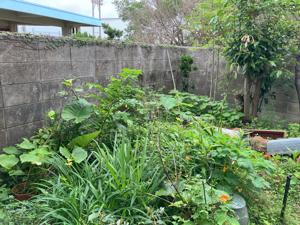
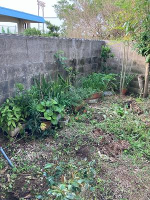
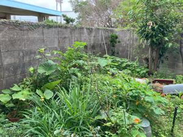
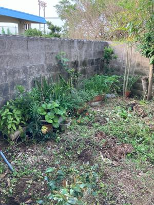
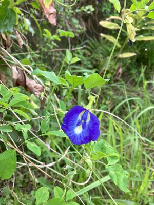

うるがいの話 ある日
最新: 裏庭の掃除【うるがいの話 ある日】とは 一日だけのプログです
『うるがいの話』の最新一日だけのプログで、通信料が少なく経済的だ。カニの画像をクリックすると全ての日付が載る『うるがいの話』サイトを表示します
|
|
【うるがいの話】 うるがい(ｳﾙｶﾞｲ urugai)とは、『もずくがに』の名前でとても大きくなります。 |
|---|---|
|
|
【カミマヤーの話】 猫のことを方言でマヤーといいます。カミマヤー（kamimayaa）とは、神の猫のことです。 |
|
【たながぁの音楽】 たながぁ（ﾀﾅｶﾞｰ tanagaa）とは手長えびのことで、何種類かあり大きいのは車 エビぐらいになります。 |

|
【ぶながぁの話】 ぶながぁ(ﾌﾞﾅｶﾞｰ bunagaa)とは、赤い髪の毛、赤い身体、そして身長は１ｍ２０ｃｍ ぐらい、川の蟹を食べているの目撃された。場所は沖縄県国頭郡大宜味村のと ある村僕の隣近所に住んでいる爺さんから、聞いた話です。 |
|
|
【ギーマの話】 ギーマ(giima)とは、山原の里山に咲くスズランに似た、 花を付けます。実は食べられます、 気が付くと口の周りが紫になっています。 |
2024年05月01日 (水）裏庭の掃除
16:14
 



今朝の土砂降り、ベランダに干したばっかりのジャージが横殴りの雨で濡れ
てしまった。通勤、通学の皆様大変どすと思う。その辺、リモート勤務はい
いですネ（いまだ実施未遂だが）。
去年の９月の台風６号の後始末から、裏庭を放置していたら草が伸び放題、
気合い入れ掃除する。ひさびさに晴れた昨日、節水から、洗車していなかっ
たが、貯水率も上がった事から、墨が流れたように汚れた車を洗車する。つ
いでに、汚れたガラス窓も水洗いする。バタフライピーの花が旬である。２
階の部屋からは、バタフライピーが手摺りまで伸び紫色の花を見る、さやは
食べられるらしい、いつかは食べてみたい。

１６時０９分 ビットコインの総資産 ￥２７、１０４（↓１、７０８）